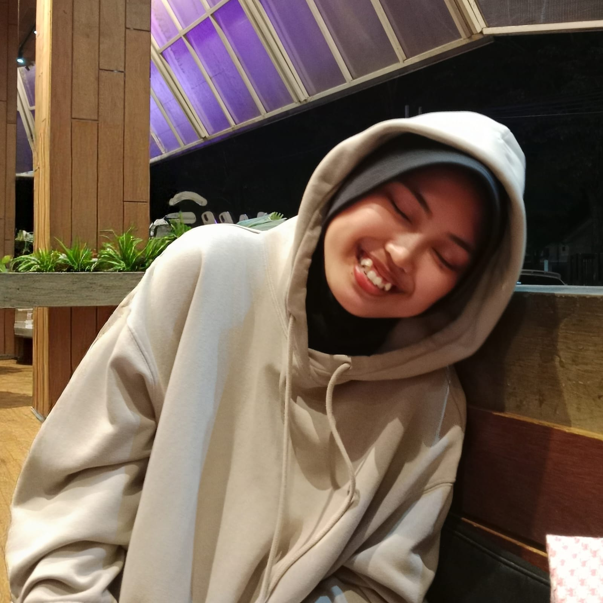
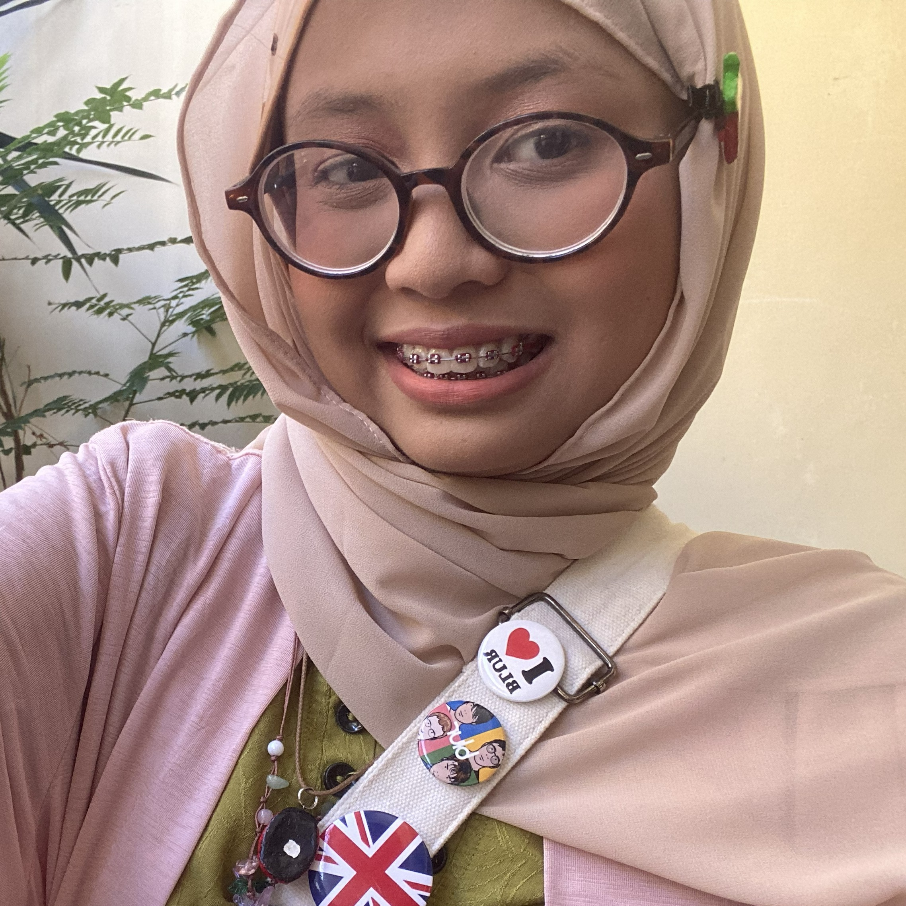
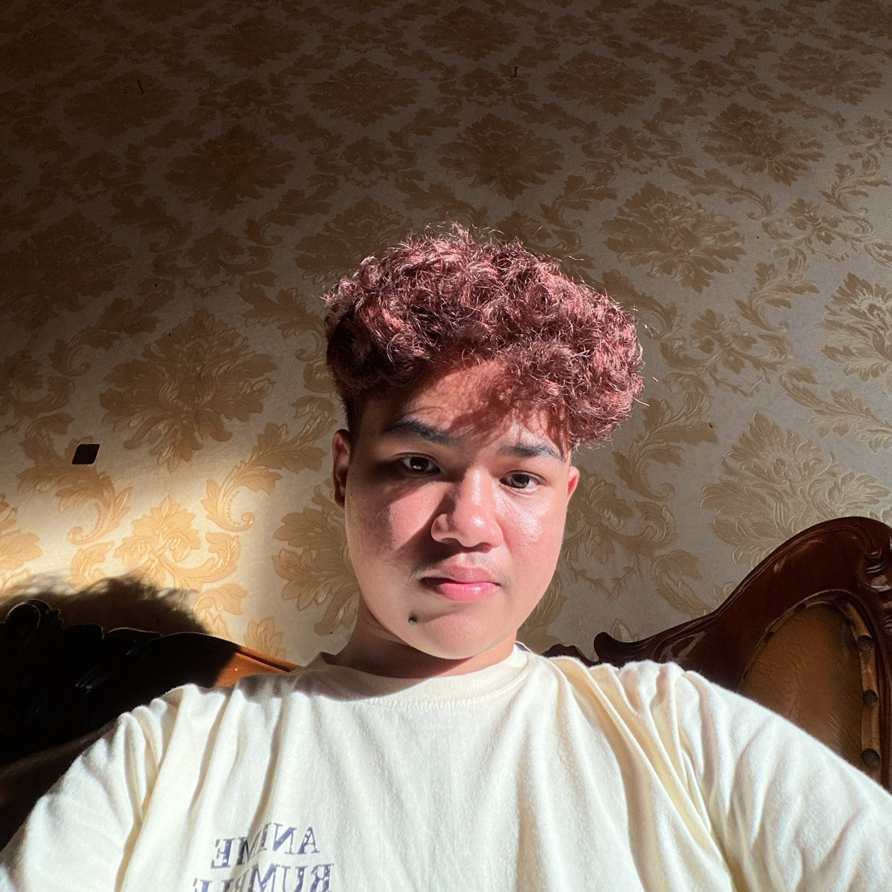
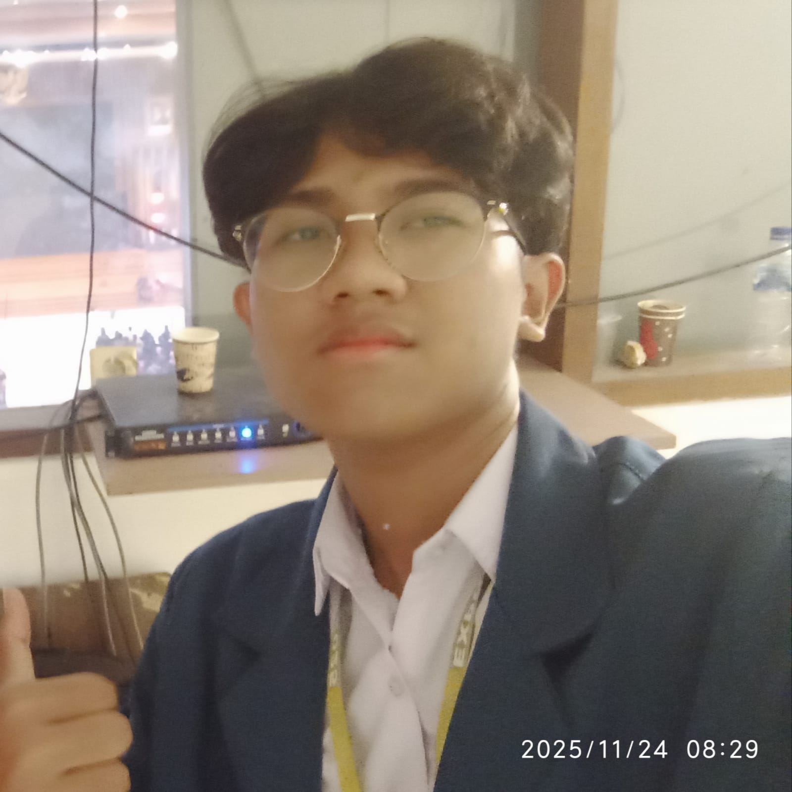
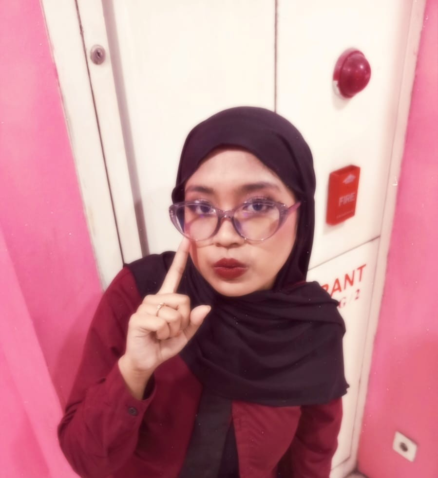
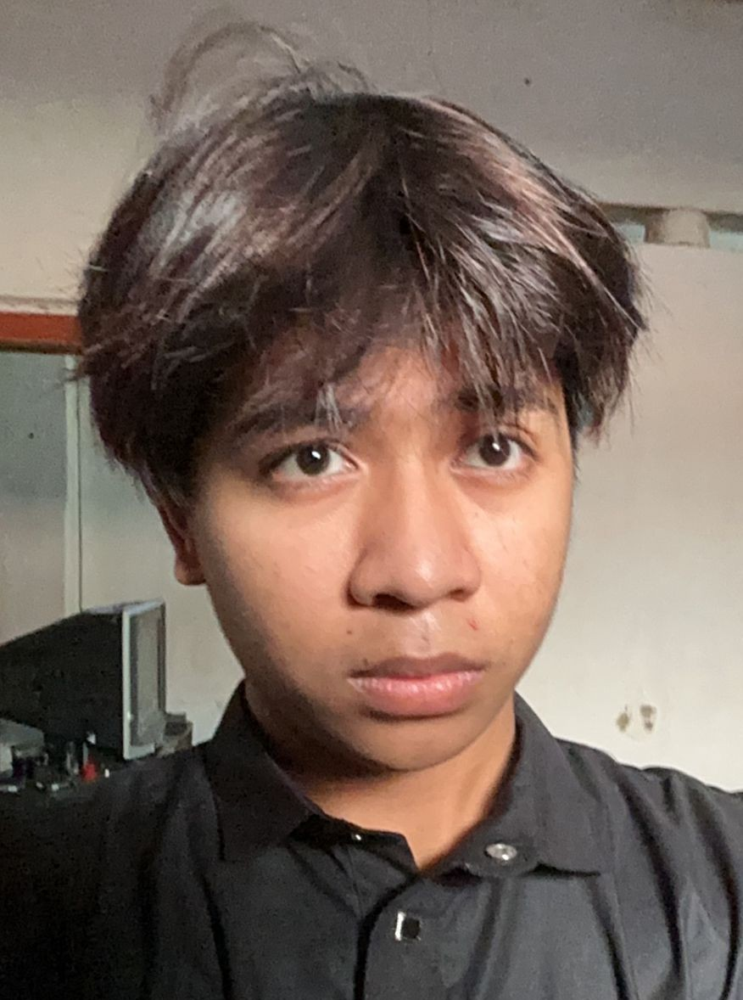
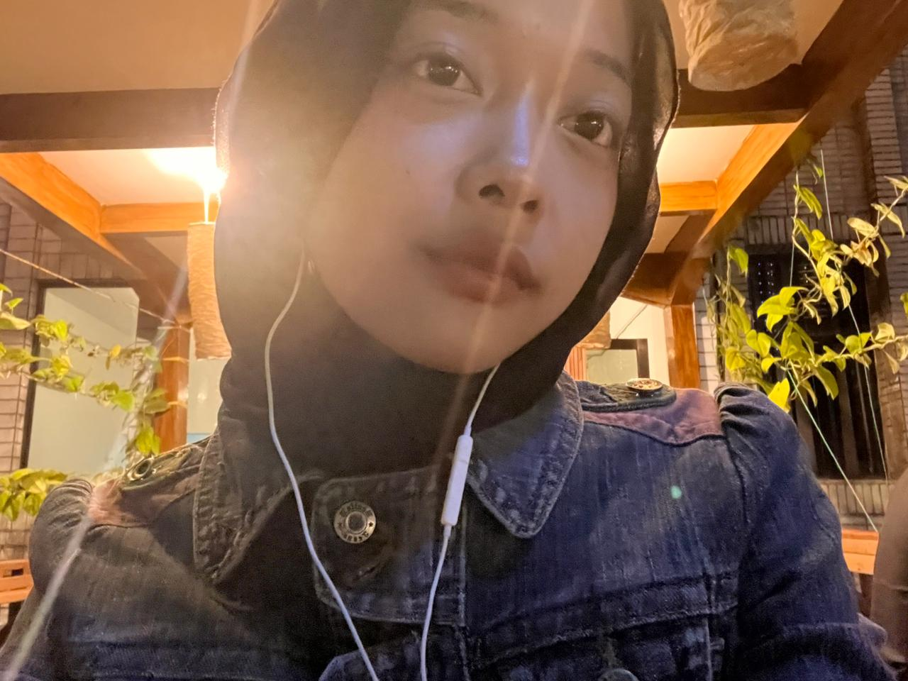
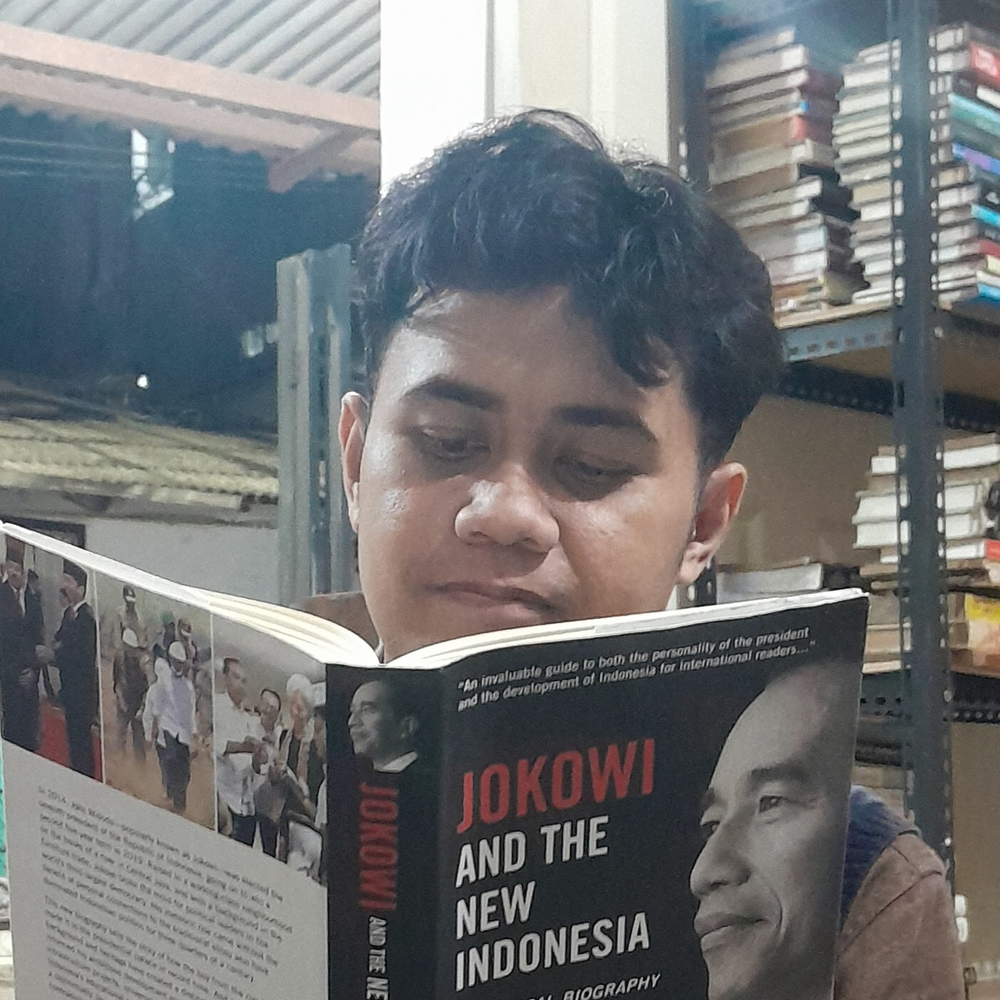

Kolaborasi kelompok untuk mewujudkan fashion yang modis dan ramah lingkungan.

Bertanggung jawab memimpin koordinasi tim, mengarahkan jalannya proyek, serta mengintegrasikan ide-ide kreatif ke dalam pengembangan platform.

Bertanggung jawab menyusun skenario dan alur konten visual, merancang metode pelaksanaan proyek, serta ikut mengoordinasikan keselarasan konsep di dalam tim

Bertanggung jawab atas pengambilan dokumentasi visual, perekaman aset media, serta proses penyuntingan video presentasi proyek.

Bertanggung jawab merakit arsitektur kode website, menyusun sistem komponen, dan memastikan web responsif.

Bertanggung jawab menyusun rancangan anggaran biaya (RAB), mengelola finansial proyek, dan menganalisis kelayakan ekonomi dari ide bisnis.

Bertanggung jawab menyusun lini masa (timeline) proyek, mengorganisasi jadwal kerja kelompok, dan memastikan setiap target selesai tepat waktu.

Bertanggung jawab merumuskan metode pelaksanaan proyek, menyusun struktur skenario konten, serta menganalisis kebutuhan fungsional sistem katalog.

Bertanggung jawab merumuskan solusi atas permasalahan limbah pakaian (fashion waste) melalui pendekatan inovasi teknologi yang ramah lingkungan.